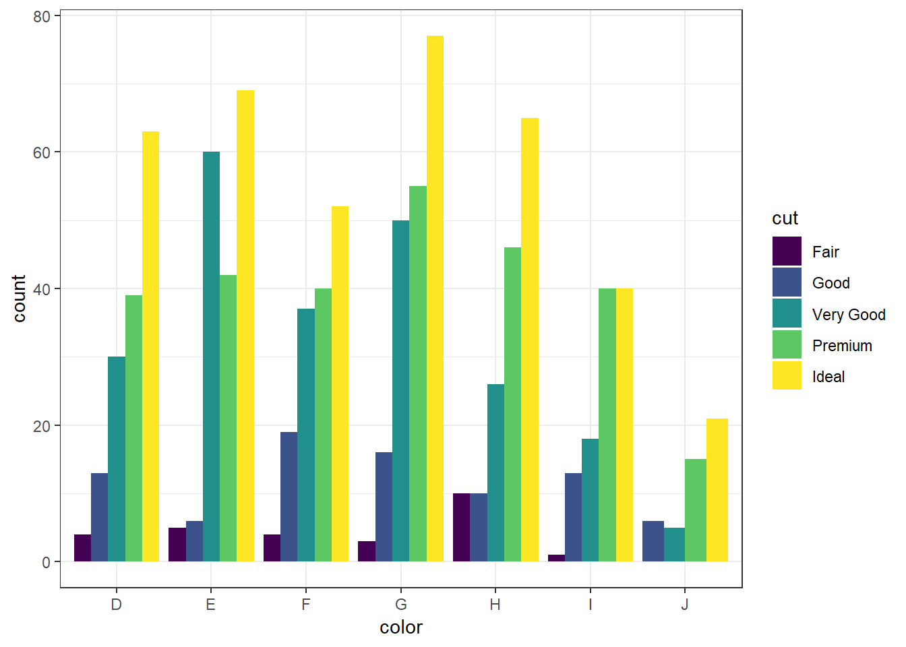

2.6 Categorical v. Categorical
2.6.1 Two-way Tables
Cross-tabs, cross-tabulations and two-way tables (all the same thing, different names) can be created by using the table() function.
2.6.1.1 Frequency table
The frequency table is constructed using the table() function.
table(dsmall$cut, dsmall$color)
##
## D E F G H I J
## Fair 4 5 4 3 10 1 0
## Good 13 6 19 16 10 13 6
## Very Good 30 60 37 50 26 18 5
## Premium 39 42 40 55 46 40 15
## Ideal 63 69 52 77 65 40 21There are 4 Fair diamonds with color D, and 21 Ideal quality diamonds with color J.
2.6.1.2 Cell proportions
Wrapping prop.table() around a table gives you the cell proportions.
prop.table(table(dsmall$cut, dsmall$color))
##
## D E F G H I J
## Fair 0.004 0.005 0.004 0.003 0.010 0.001 0.000
## Good 0.013 0.006 0.019 0.016 0.010 0.013 0.006
## Very Good 0.030 0.060 0.037 0.050 0.026 0.018 0.005
## Premium 0.039 0.042 0.040 0.055 0.046 0.040 0.015
## Ideal 0.063 0.069 0.052 0.077 0.065 0.040 0.0210.4% of all diamonds are D color and Fair cut, 2.1% are J color and Ideal cut.
2.6.1.3 Row proportions
To get the row proportions, you specify margin=1. The percentages now add up to 1 across the rows.
round(prop.table(table(dsmall$cut, dsmall$color), margin=1),3)
##
## D E F G H I J
## Fair 0.148 0.185 0.148 0.111 0.370 0.037 0.000
## Good 0.157 0.072 0.229 0.193 0.120 0.157 0.072
## Very Good 0.133 0.265 0.164 0.221 0.115 0.080 0.022
## Premium 0.141 0.152 0.144 0.199 0.166 0.144 0.054
## Ideal 0.163 0.178 0.134 0.199 0.168 0.103 0.05414.8% of all Fair quality diamonds are color D. 5.4% of all Ideal quality diamonds have color J.
2.6.1.4 Column proportions
To get the column proportions, you specify margin=2. The percentages now add up to 1 down the columns.
round(prop.table(table(dsmall$cut, dsmall$color), margin=2),3)
##
## D E F G H I J
## Fair 0.027 0.027 0.026 0.015 0.064 0.009 0.000
## Good 0.087 0.033 0.125 0.080 0.064 0.116 0.128
## Very Good 0.201 0.330 0.243 0.249 0.166 0.161 0.106
## Premium 0.262 0.231 0.263 0.274 0.293 0.357 0.319
## Ideal 0.423 0.379 0.342 0.383 0.414 0.357 0.4472.7% of all D color diamonds are of Fair quality. 44.7% of all J color diamonds are of Ideal quality.
2.6.2 Grouped bar charts
To compare proportions of one categorical variable within the same level of another, is to use grouped barcharts.
2.6.2.1 base
As before, the object to be plotted needs to be the result of a table.
cc <- table(dsmall$cut, dsmall$color)
barplot(cc)
Stacked bars can be difficult to interpret, and very difficult to compare values between groups. A side by side barchart is preferable. The beside=TRUE is what controls the placement of the bars.
barplot(cc, main="quick side by side barchart using base graphics", beside=TRUE)
Great, but what do the colors represent? We need to add a legend. And i’m going to customize the colors.
barplot(cc, main="quick side by side barchart using base graphics", beside=TRUE,
col=rainbow(5), legend=rownames(cc))
For more than 2 colors I do not recommend choosing the colors yourself. I know little about color theory so I use the built-in color palettes. Here is a great cheatsheet about using color palettes.
2.6.2.2 ggplot
Again plot the cut on the x axis, but then fill using the second categorical variable. This has the effect of visualizing the row percents from the table above. The percent of color, within each type of cut.
ggplot(dsmall, aes(x=cut, fill=color)) + geom_bar()
Again the default is a stacked barchart. So we just specify position=dodge to put the bars side by side.
ggplot(dsmall, aes(x=cut, fill=color)) + geom_bar(position = "dodge")
And look, an automatic legend. What if I wanted to better compare cut within color group? This is the column percentages. Just switch which variable is the x axis and which one is used to fill the colors!
ggplot(dsmall, aes(x=color, fill=cut)) + geom_bar(position = "dodge")
And this easy change is why we love ggplot2.
2.6.3 Grouped bar charts with percentages
Not as easy as one would hope, but the solution is to calculate the desired percentages first and then plot the summary data using either geom_bar(stat='identity') or geom_col().
calc.props <- diamonds %>% group_by(color, cut) %>%
summarise(count=n()) %>%
mutate(pct=round(count/sum(count),3))
calc.props
## # A tibble: 35 x 4
## # Groups: color [7]
## color cut count pct
## <ord> <ord> <int> <dbl>
## 1 D Fair 163 0.024
## 2 D Good 662 0.098
## 3 D Very Good 1513 0.223
## 4 D Premium 1603 0.237
## 5 D Ideal 2834 0.418
## 6 E Fair 224 0.023
## 7 E Good 933 0.095
## 8 E Very Good 2400 0.245
## 9 E Premium 2337 0.239
## 10 E Ideal 3903 0.398
## # ... with 25 more rowsSince we’re plotting summary data, the height of the bars is specified using y=pct.
ggplot(calc.props, aes(x=color, fill=cut, y=pct)) +
geom_col(position="dodge") + theme_bw() 
Now set some options to the y axis using scale_y_continuous() to make the graph more accurate and readable. The labels=percent comes from the scales package.
library(scales)
ggplot(calc.props, aes(x=color, fill=cut, y=pct)) +
geom_col(position="dodge") + theme_bw() +
scale_y_continuous(limits=c(0,1), labels=percent)
2.6.4 Mosaic plots
But what if you want to know how two categorical variables are related and you don’t want to look at two different barplots? Mosaic plots are a way to visualize the proportions in a table. So here’s the two-way table we’ll be plotting.
table(dsmall$cut, dsmall$color)
##
## D E F G H I J
## Fair 4 5 4 3 10 1 0
## Good 13 6 19 16 10 13 6
## Very Good 30 60 37 50 26 18 5
## Premium 39 42 40 55 46 40 15
## Ideal 63 69 52 77 65 40 21The syntax for a mosaic plot uses model notation, which is basically y ~ x where the ~ is read as “twiddle” or “tilde”. It’s to the left of your 1 key.
mosaicplot(cut~color, data=dsmall)
Helpful, ish. Here are two very useful options. In reverse obviousness, color applies shades of gray to one of the factor levels, and shade applies a color gradient scale to the cells in order of what is less than expected (red) to what is more than expected (blue) if these two factors were completely independent.
par(mfrow=c(1,2)) # display the plots in 1 row and 2 columns
mosaicplot(cut~color, data=dsmall, color=TRUE)
mosaicplot(cut~color, data=dsmall, shade=TRUE)
For example, there are fewer ‘Very Good’ cut diamonds that are color ‘G’, and fewer ‘Premium’ cut diamonds that are color ‘H’. As you can see, knowing what your data means when trying to interpret what the plots are telling you is essential.
That’s about all the ways you can plot categorical variables. If you are wondering why there was no 3D barcharts demonstrated see
here, here, and here for other ways you can really screw up your visualization.